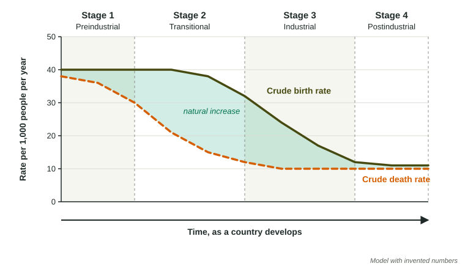

Demographic Transition
The demographic transition model follows a country’s crude birth and death rates as it develops.
Part 1 · Hook
Why this matters
Part 2 · Before you start
What this builds on
Part 3 · Prerequisite check
Quick check before you start
1. A country has a crude birth rate of 30 and a crude death rate of 10. What is its rate of natural increase?
- 2%
- 20%
- 0.2%
- 3%
Show the answer
(30 - 10) / 10 = 2% a year.
- Correct: 2%:
- 20%:
- 0.2%:
- 3%:
2. Which change tends to lower a country’s total fertility rate?
- More schooling for girls and women
- Earlier marriage
- Higher infant mortality
- Children working on family farms
Show the answer
Schooling delays marriage and widens choices, so families have fewer children.
- Correct: More schooling for girls and women:
- Earlier marriage:
- Higher infant mortality:
- Children working on family farms:
Part 4 · See it
See it first

Part 5 · Step by step
How it works, step by step
- Stage 1: little medicine, unsafe water and unreliable foodbirth and death rates are both high, so the population grows slowly
- Stage 2: clean water, vaccines and steadier food arrivethe death rate falls fast while the birth rate stays high, so the population grows rapidly
- Stage 3: people move to cities, girls go to school, infant mortality is low and family planning spreadsthe birth rate falls, the gap narrows and growth slows
- Stage 4: birth and death rates are both lowthe population grows slowly, holds steady, or may start to shrink if births fall below deaths
Part 6 · Key ideas
Key ideas
- The demographic transition model describes how a country’s crude birth and death rates change as it develops economically, in four stages.
- Preindustrial stage (1): high birth and death rates, slow growth. Transitional stage (2): death rate falls, birth rate stays high, fastest growth.
- Industrial stage (3): birth rate falls toward the death rate, growth slows. Postindustrial stage (4): both low, little or no growth, sometimes decline.
- Each stage has a typical age structure: a wide base in stages 1 and 2, a narrowing base in stage 3, and a column or a narrow base in stage 4.
Part 7 · Misconception
A common mistake
The wrong idea: Populations grow fastest in stage 1, because the birth rate is highest then.
What actually happens: Growth depends on the gap between births and deaths. In stage 1 both are high, so the gap is small. Growth is fastest in stage 2, when deaths have fallen but births have not.
Part 8 · Check yourself
Check yourself
Exam-style questions. Anything you miss goes into your review queue.
Model or diagram
The demographic transition model
1. In which stage of the model is the gap between the birth rate and the death rate widest?
- Stage 2, transitional
- Stage 1, preindustrial
- Stage 3, industrial
- Stage 4, postindustrial
Show the answer
The widest gap means the fastest natural increase.
- Correct: Stage 2, transitional: Right: the death rate has fallen but the birth rate is still near 40, so the shaded gap is widest.
- Stage 1, preindustrial: Both rates are high and close together; growth is slow.
- Stage 3, industrial: The birth rate is falling, so the gap is narrowing.
- Stage 4, postindustrial: Both rates are low and close together.
2. According to the model, what change marks the start of stage 3?
- The death rate begins to fall
- The birth rate begins to fall steeply
- Both rates rise together
- The death rate rises above the birth rate
Show the answer
Stage 2 is the falling death rate; stage 3 is the falling birth rate.
- The death rate begins to fall: The death rate falls in stage 2, before stage 3.
- Correct: The birth rate begins to fall steeply: Right: in stage 3 the birth rate drops toward the death rate.
- Both rates rise together: Neither rate rises in the model.
- The death rate rises above the birth rate: That does not happen in stage 3.
3. Which explanation best accounts for the falling death rate in stage 2?
- Women having fewer children
- More people moving to other countries
- Clean water, vaccines and more reliable food
- An older population with many more retirees
Show the answer
Death rates fall first because public health spreads faster than changes in family size.
- Women having fewer children: That lowers the birth rate, which happens later, in stage 3.
- More people moving to other countries: Migration does not change the crude death rate in the model.
- Correct: Clean water, vaccines and more reliable food: Right: these cut deaths from disease and hunger, especially among children.
- An older population with many more retirees: An older population would raise the death rate, not lower it.
Data
One country over 150 years
| Year | Crude birth rate | Crude death rate |
|---|---|---|
| 1870 | 38 | 34 |
| 1910 | 37 | 20 |
| 1950 | 30 | 12 |
| 1980 | 17 | 9 |
| 2020 | 10 | 10 |
4. In the table, between which two years did the country’s death rate fall the most?
- 1910 and 1950
- 1950 and 1980
- 1980 and 2020
- 1870 and 1910
Show the answer
Subtract each pair of death rates and compare.
- 1910 and 1950: From 20 to 12 is a drop of 8.
- 1950 and 1980: From 12 to 9 is a drop of 3.
- 1980 and 2020: From 9 to 10 is a small rise.
- Correct: 1870 and 1910: Right: from 34 to 20, a drop of 14 per 1,000.
5. What was the country’s rate of natural increase in 1910, in percent?
Type a number, then its unit (%). Scale words (2.5 million) and powers of ten (2.5 × 10^6) are read.
Show the answer
a year.
- Answer: 1.7 %
6. Which stage of the demographic transition best fits the country in 2020?
- Stage 4
- Stage 1
- Stage 2
- Stage 3
Show the answer
Low, equal rates mark stage 4.
- Correct: Stage 4: Right: both rates are low and equal at 10, so natural increase is zero.
- Stage 1: Stage 1 has high birth and death rates; these are low.
- Stage 2: Stage 2 has a high birth rate; 10 is low.
- Stage 3: In stage 3 the birth rate is still well above the death rate.
7. Which stage of the demographic transition has high birth rates, high death rates and slow population growth?
- Transitional
- Industrial
- Preindustrial
- Postindustrial
Show the answer
Preindustrial: high and high.
- Transitional: In the transitional stage the death rate has fallen, so growth is fast.
- Industrial: In the industrial stage the birth rate is falling.
- Correct: Preindustrial: Right: both rates are high, so the gap and the growth are small.
- Postindustrial: In the postindustrial stage both rates are low.
Part 9 · Summary
Summary
Part 10 · Up next
What comes next
Part 11 · Connections